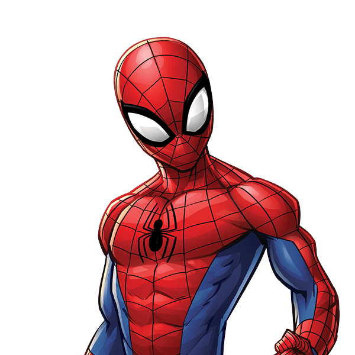

My Favorite Super Heroes

Dead Pool
Deadpool, whose real name is Wade Wilson, is a disfigured and deeply disturbed mercenary and assassin with the superhuman ability of an accelerated healing factor and physical prowess.

Spider Man
Bitten by a radioactive spider, Peter Parker’s arachnid abilities give him amazing powers he uses to help others, while his personal life continues to offer plenty of obstacles.

Bat Man
Unlike most superheroes, Batman does not possess any superpowers; rather, he relies on his genius intellect, physical prowess, martial arts abilities, detective skills, science and technology, vast wealth, intimidation, and indomitable will.